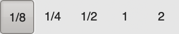
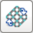
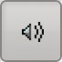
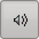
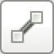

The Annotated Forge Manual (WIP)
With annotations specifically detailing how Weland and Atque, Forge’s modern replacements, differ from Forge, and correcting numerous errata found within the manual. (However, thus far, I’ve only done the first six pages – twenty-eight are left.)
Introduction
Forge is the powerful map-making tool used by Bungie to create levels for Marathon, Marathon 2, and now Marathon Infinity. We’ve included Forge with the Marathon Trilogy so that you can create your own fantastic Marathon worlds and share them with friends or upload them to the ’net.
Forge uses a simple 2D perspective to create lines, polygons, and to place objects, sounds, and lights. It also utilizes a cool 3D perspective for texturing, adjusting heights, and fine-tuning the map’s look and feel.
Although Forge is a complicated tool, it is extremely intuitive and easy to learn (provided you’re willing to read a little and watch the tutorials we’ve included on the CD-ROM). In the following pages we’ll be covering key definitions and descriptions you’ll need to get familiar with (computer geeks like us love to use weird definitions so bear with us). Later on, we’ll be going through a few step-by-step tutorials that’ll walk you through the map making process. But first, watch the Forge tutorial movies included on the Trilogy CD-ROM and then come back to the tutorials in this manual for more detailed instructions.
Key Definitions
Level
A single environment, with an entrance and exit, that uses a single texture collection.
[Aleph One no longer requires that maps use a single texture collection; thus, Visual Mode.lua and Vasara allow mapmakers to texture levels using textures from any collection. However, I advise using multiple texture sets sparingly for two reasons: first, textures from multiple collections do not always mesh well aesthetically; and second, using a single texture from any collection will cause Aleph One to load the entire collection, regardless of how many textures you load from it. -Ed.]
Designed for single or multiplayer play. Also known as a Map Level.
Network Level
A single environment, with at least a single entrance but without a user-activated exit, that uses a single texture collection.
[As with solo levels, Aleph One does not require network levels to use a single texture collection; however, for the same reasons, I advise using multiple texture sets judiciously. -Ed]
Designed for multiplayer combat, without save stations or computer terminals.
Map
A collection of levels and/or network levels that have been ‘merged’ into a single, stand-alone collection.
Merge (Merging)
The process of stringing together a collection of levels, like the map included with the Infinity application. In addition, a merged map may contain terminal text, terminal pictures, and for Marathon Infinity levels, level-specific physics models.
[This is one of the few things you would use Atque to do rather than Weland. -Ed.]
Polygon
A level in Marathon is basically a bunch of polygons connected together. What’s a polygon, you ask? Well, the technical term is, “a closed figure bounded by three or more line segments.” For example, a triangle is a polygon with 3 sides, while a square is a polygon with 4 equal sides. A polygon in Marathon can have a maximum of 8 sides (octagon) and a minimum of three (triangle). In Marathon, these polygons have to be convex (not concave). This means that all angles inside a given polygon must be >180°. [This is incorrect; it should read “≤180°”, or alternatively, “ all angles inside a given polygon must not be >180°.” -Ed.] A good way to think about convex polygons is if you tried to put an imaginary rubberband around a polygon and the rubberband does not completely touch one of the sides, then the polygon is not convex. If the rubberband touches all sides, then the polygon is convex.
In the diagram below, the second polygon is not fillable (a term discussed later) because it is not convex. However, by adding a line (where the two dark circles are in the right diagram below), you can make two different polygons that are convex.
Line
A line connects two vertices. Lines can be either solid, transparent, or empty.
[This is not strictly accurate: lines can be both solid and transparent; they can also be neither solid nor transparent, which can be a clever way to hide secrets. “Empty” corresponds roughly to “Remove Textures” in Weland; Aleph One also adds a new “Decorative” option, which means that if and only if a side has a transparent texture on it, projectiles will always pass through it. -Ed.]
Players cannot pass through solid sides.
[This is also not strictly accurate: a solid side must have a texture on it to be impassable to players, either as a primary or transparent texture. The primary texture need not be visible; adjusting the adjoining polygon to have a higher floor or lower ceiling, applying a texture to the side, and then restoring said polygon to its original height will make the side impassable. Note that this will also make it impassable to projectiles (unless a transparent texture is applied and it is marked as “decorative”); additionally, be aware that it is possible to make one-way gates this way. -Ed.]
If a line is transparent, you can see and walk through it.
[This, too, is not strictly accurate: it is possible for sides to be both solid and transparent. If a texture is applied to the side, said side is impassable. -Ed.]
If a line is empty, then there’s no texture on it.
Vertex (pl. vertices)
A vertex is a point at either end of a bounding line that defines the edge of a polygon. Every line has two vertices.
A platform is a polygon which has the ability to move up and/or down. A platform may be one of two types: Doors are special types of platforms and can be opened and closed by the action key, or a platform, which is a movable polygon which the player can stand on and be transported up or down.
Draw Mode
Forge has two editing modes. Draw Mode is Forge’s 2D representation of a map. This looks similar to the map view in the game when the player presses ‘M’ except that additional information is available.
Visual Mode
Visual mode, Forge’s secondary mode, uses a 3D representation of the world which is similar to playing the game. In this mode the weapons manifest is replaced by a palette containing the current texture collection. Furthermore, the mouse can be used to place and move textures around on the sides of polygons. Lastly, there are no monsters or weapons visible, though scenery will be displayed.
File Menu
New Level
Creates a new level.
Open
Allows you to open an existing level or map.
Close
Closes the current file.
[Weland does not have this option. -Ed.]
Save Scenario
Allows the current level to be saved. Merged maps cannot be edited and saved.
[Weland simply calls this “Save”. -Ed.]
Save Scenario as...
Allows the current level to be saved under a different name.
[Weland simply calls this “Save As”. -Ed.]
Merge Levels...
Compiles individual levels into a single Map file.
[Weland does not have this function; Weland levels should be merged with Atque. -Ed.]
Export Level...
Allows a level to be exported from a previously merged Map file. This process extracts only the level and not terminal texts or the embedded physics model.
[In Weland, this is accomplished simply by selecting “Save” or “Save As” after loading a merged map file. Note that this will save the level with its corresponding terminal texts and script files; I advise using Atque to strip those afterwards, as including them in a split map folder can cause problems. -Ed.]
Export OBJ...
A feature added to Weland that exports the map geometry as a WaveFront .obj file, which can be loaded in programs such as Blender, Maya, AutoCAD, and Photoshop. -Ed.
Quit
Quits Forge.
Edit Menu
Undo
Will undo the most recently performed action.
Preferences...
There are three Preferences in this section. Graphics lets you modify Visual Mode resolutions and brightness. Key Settings allows you to modify keyboard settings.
[In Weland, you edit both of these by clicking ‘Edit Preferences’ underneath Scenario in the Visual Mode section, then editing Aleph One’s settings. For detailed information on setting up Visual Mode, see my Weland setup guide. -Ed.]
Colors lets you change the most prominent colors used in Draw Mode.
[Weland adds multiple new sections to its Preferences.
- ‘Draw Mode’ contains two options:
- ‘Smooth Lines’ affects the display of lines in draw mode.
- ‘Show Hidden Vertices’ affects whether the height slider hides vertices that are unattached to any visible lines.
- ‘Editor’ also contains two options, both of which are new to Weland:
- ‘Split Lines Attached to Polygons’ allows mapmakers to split lines of filled polygons that have fewer than 8 vertices. Note that all sides that are split in this way will currently be marked as ‘Solid’, regardless of whether they originally were.
- ‘Remember Deleted Sides’ (sometimes) remembers the textures of sides attached to polygons that are deleted and then re-filled.
- ‘Shapes File’ selects the shapes file to be used in Visual Mode and Weland’s top-down texture view.
- ‘Visual Mode’ has two options:
- ‘Aleph One’ selects the Aleph One application that Visual Mode launches.
- ‘Scenario’ selects the scenario that Visual Mode uses. If you’re new to mapping, I recommend starting with Marathon Infinity.
- ‘Edit Preferences’ launches the Aleph One application and scenario selected above, in which you can then:
- enable Visual Mode.lua, Vasara, or Vasara AF as desired,
- configure your keyboard and mouse settings as needed,
- configure graphics and sound settings to taste,
- enable or disable other plugins (e.g., if you wish to use high-definition textures while texturing). -Ed.]
Levels Menu
This menu will display the name of the currently active level. In an unmerged level this will be just one name. However, in a merged map you can navigate between individual levels.
View Menu
Draw Mode
Switches to the 2D overhead map view. All polygon creation and object placement is done in this mode.
Visual Mode
Switches to the 3D view. Texture placement, alignment, and height adjustments are done in this mode.
[Currently, no visual mode plugins for Aleph One support height adjustments, although I plan to add it to Vasara AF someday. For now, you must use ‘Elevation’ to set polygon heights. -Ed.]
|
Elevation
Shows a 2D view of ceiling and floor elevations by color-coding heights. Elevations may range from −9 W.U. to +9 W.U.
|
| |
[Weland allows heights to range from −32 WU (−32,768 IU) to +31.999 WU (+32,767 IU); however, be aware that if any side the player can view extends more than 32 WU above or below the player’s camera height, a hall-of-mirrors glitch will result. Additionally, game behavior will get very glitchy below −31 WU (−31,744 IU) or above +31 WU (+31,744 IU). -Ed.] |
  |
Textures
Allows you to modify floor and ceiling textures.
|
|
Polygon Type
Used to assign specific values to polygons (ie. Monster Impassible, hill, etc.).
|
  |
Lights
Shows ceiling, floor and liquid light intensities. Also allows these settings to be edited and new light types to be defined.
|
 |
Liquids
The liquids menu lets you create and edit new liquid types and assign them to polygons.
|
 |
Sounds
Here you can create and edit new liquid [sound -Ed.] types and assign them to polygons.
|
Special Menu
Zoom In/Zoom Out
Allows the visible level area to be enlarged or reduced.
Map Manager
This palette lets you customize some Draw Mode Parameters. The options are:
|  |
Grid Size
Selects the resolution of the grid.
|
|
Display Grid
Toggles the grid on or off.
|
 |
Constrain to Grid
This will constrain all line vertices to the currently displayed grid. It only constrains when you create a new line, not when you move it.
|
| |
[Note that, while ‘Constrain to Grid’ doesn’t constrain lines or polygons that you move, it does constrain vertices. -Ed.] |
|  |
Custom Grid
[Rotate, resize, or move the grid. See Circles and the Custom Grid for a detailed explanation. -Ed.]
|
  
   |
Show Monsters, etc.
These checkboxes allow you to toggle objects and annotations on or off in 2D mode.
[Weland currently has no toggle for the display of annotations. -Ed.]
|
| |
Visual Mode Crosshairs
The crosshairs are used as a visual aid to place textures in 3D mode (when using the spacebar). This checkbox allows you to toggle the crosshair on or off.
[Whether this setting is available is entirely up to the plugin used for visual mode. Pressing F8 in visual mode will toggle crosshairs if the plugin supports it. -Ed.]
|
[Apart from Visual Mode Crosshairs (which is controlled directly within visual mode itself), Weland replaces the Map Manager with a palette directly below the main menu. Hover over each icon to see what it does. Additionally. Also, be aware of the custom grid, a feature I explain in my appendix on circles. -Ed.]
View Height Window
These two vertical sliders control the currently visible floor to ceiling region. If a level has a lot of overlapping polygons at different heights, this feature lets you isolate the view to show only the polygons you’re working on.
[This window has been replaced with two horizontal sliders at the bottom of the window. -Ed.]
Goto...
Sometimes an error message will indicate that a specific polygon is convex or that something else is wrong. The error message will indicate the offending polygon by its number. Use the Goto command to quickly locate that polygon, line or vertex.
Set Level Parameters
This allows you to make changes to a level’s parameters. Here you can change texture collections, landscapes, etc. The dialog will also indicate whether or not the current level is compatible with both Marathon 2 and Marathon Infinity or just Marathon Infinity.
[Weland does not display the compatibility information, presumably because hardly anyone runs vanilla Marathon 2 anymore. -Ed.]
Set Item Parameters
Allows the number, frequency and randomness of placed objects to be edited.
Set Monster Parameters
Allows the number, frequency and randomness of monsters to be edited.
Recenter Level
This command will take your entire map and physically recenter it to the map.
[Forge veterans should note that Weland will only move maps by multiples of 1 WU (1,024 IU) when recentering them. Forge was not so picky. -Ed.]
Pave Level
Will take three generic textures from the current collection and texture all polygons in the level. One texture for the floor, one for the ceiling, and one for the walls.
[This only applies to untextured floors, ceilings, or sides that would be visible at the time the command is run (i.e., its reverse polygon’s floor is higher than its obverse polygon’s, or its reverse polygon’s ceiling is lower than its obverse polygon’s, or it has no reverse polygon. For an explanation of the terms obverse polygon and reverse polygon, see Vasara AF’s readme).
Both Forge and Weland always pave walls with the sixth texture in the set selected in Level Parameters, floors with the seventh texture in the set, and ceilings with the eighth texture. -Ed.]
Nuke Textures
Resets all textures in the level to the following:
- Walls: Frame 5 (the sixth texture) of the Environment set in Level Parameters
- Floors: Frame 6 (the seventh texture) of the Environment set in Level Parameters
- Ceilings: Frame 7 (the eighth texture) of the Environment set in Level Parameters
Also resets all transfer modes to “Normal”, removes all transparent textures, and resets lights of all walls (but not all floors or ceilings) to 0. -Ed.
Nuke Objects Only
Will remove all objects from the level.
[This is simply called Nuke Objects in Weland. -Ed.]
Nuke & Pave Level
This will remove all textures and objects from the map (but not liquids). If you want to import maps created in Pfhorte (a shareware Marathon level editor), you need to Nuke and Pave the map before working with it in Forge. This will eliminate most map incompatibilities.
[Weland separates this command into “Nuke Textures” and “Nuke Objects”. -Ed.]
Plugins
Lists all Weland plugins you have installed. Weland comes with two, although you may have to enable them in your OS’ security settings. They are:
Auto Shade Level
Sets all floors ’ lights to 5, all ceilings’ lights to 10, and all walls’ lights to values from 3 (for walls facing south) to 13 (for walls facing north). Warning: if you have already begun to light your map, this
will override the lighting you have applied – be careful!
Lists all tags used in your map, what lights and platforms are set to use them, and what lines are attached to switches that control them. Note that if a tag is associated with a terminal script rather than a switch of some sort, this plugin will not see it. -Ed.
These tools are available from the tools palette in Draw Mode. Keyboard shortcuts are in parentheses.
|
Arrow (A)
Used to select vertices, lines, polygons and objects. Double-click on a vertex or line to make even finer adjustments.
|
|  |
Line (L)
Used to draw polygon outlines.
|
|
Fills the polygon created with the line tool. This assigns the polygon default floor and ceiling elevations and turns it into a valid 3D space.
|
| |
[This is not strictly true – Forge and Weland both attempt to read floor and ceiling elevations, as well as texture and light information, from nearby polygons. If no polygons share a line, both programs will give the new polygon default heights and lighting; it will also be untextured if no nearby polygons are textured. -Ed.] |
|
Used to create generic polygon outlines with a fixed number of sides. Double-click on this tool to set the polygon type. Note: the vertices generated by this tool aren’t linked to any outside of this polygon so they have to be manually connected to other polygons.
|
| |
[This tool does not exist in Weland. If you need to make polygons with a specific number of vertices, I wrote a guide to using the custom grid to do precisely that. -Ed.] |
|
Move Tool (D)
Drags the visible region of the level. Hold down the spacebar in any top-down view mode to change the current tool into the move tool.
|
|
Zoom Tool (Z)
Zooms the map in large increments. Hold down the option key to zoom back out. Command + and command - also zoom the map in and out but in much smaller increments.
|
| |
[In Weland, these zoom by the same increment. Additionally, as is commonly the case, replace ‘Command’ with ‘Control’ on Windows and Linux. -Ed.] |
") |
Text Tool (T)
Places text notes [also called annotations -Ed.] inside the current polygon. This text will be visible from within the game when the user views the map. It’s used to name rooms or regions of a level. To modify existing annotations, double-click on them with the arrow.
|
") |
Object Tool (O)
Places objects on the map. Objects include items, player locations, monsters, fixed sound sources, scenery, and level goals.
|
{kind=link}